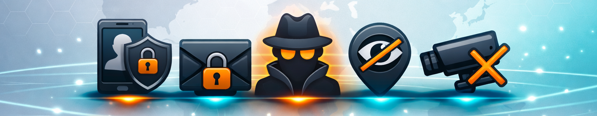

Es gibt Themen, über die man redet, weil man muss und solche, über die man redet, weil man nicht länger schweigen kann. Privatsphäre gehört zur zweiten Sorte.

Was Privatsphäre heute eigentlich bedeutet
Wenn wir über Privatsphäre sprechen, denken viele an den Rückzugsort: das eigene Zimmer, das Bad, das gesicherte Zuhause. Doch im digitalen Zeitalter hat Privatsphäre längst neue Räume erobert und verloren.
Heute betrifft sie nicht nur unsere vier Wände, sondern unsere Daten, Gespräche, Bewegungen, Geräte und Gedanken.
Räumliche und kommunikative Privatsphäre
Unsere Wohnung ist unser Schutzraum, das Zuhause vor neugierigen Blicken. Doch auch unsere digitalen Gespräche brauchen diesen Schutz: Telefonate, E-Mails, Chats alles fällt unter das Brief-, Post- und Fernmeldegeheimnis (Art. 10 GG).
Informations- und Datenprivatsphäre
Name, Adresse, Gesundheitsdaten, Standort, Surfverhalten, all das sind Bausteine unserer digitalen Identität. Die DSGVO verspricht Schutz, Transparenz und Selbstbestimmung. In der Praxis aber wird unser Verhalten permanent getrackt, gespeichert und analysiert, oft ohne unser Wissen.
Soziale, berufliche und mediale Privatsphäre
Privatsphäre heißt auch: Selbst bestimmen, was öffentlich wird. Wer darf meine Fotos posten? Darf der Arbeitgeber meine Mails lesen? Was passiert mit Aufnahmen, die jemand ohne Erlaubnis teilt?
Warum Privatsphäre im Internet so leicht verloren geht
Hier ein ehrlicher Überblick, warum die Privatsphäre im Internet und auf Smartphones so leicht verloren geht und was dahinter steckt.
Wirtschaftliche Interessen
Daten sind Geld. Fast jede App, Website oder Plattform sammelt Informationen, um sie zu analysieren, weiterzuverkaufen oder für personalisierte Werbung zu nutzen.
Selbst kostenlose Dienste „bezahlt“ man mit Aufmerksamkeit, Verhalten und persönlichen Informationen statt mit Geld. Konzerne wie Meta, Google oder TikTok erstellen detaillierte Persönlichkeitsprofile, um unser Konsumverhalten vorherzusagen und zu beeinflussen.
Fakt: Datenhandel ist längst profitabler als Öl oder Gold.
Wer profitiert von diesen Daten? Ein Blick auf die Datenhändler
Viele der gesammelten Daten landen nicht nur bei den App-Anbietern oder Tech-Konzernen selbst, sondern werden weiterverkauft, oft ohne das Wissen der Nutzer. Eine großangelegte Recherche von netzpolitik.org hat aufgedeckt, wie sogenannte Databroker persönliche Informationen sammeln, bündeln und weiterverbreiten.
Mehr dazu: „Databroker Files: Die große Datenhändler-Recherche im Überblick“
Die Untersuchung zeigt, wie weitreichend der Handel mit persönlichen Daten ist von Standortverläufen über finanzielle Informationen bis hin zu Gesundheitsdaten. Wer ein Smartphone nutzt, gibt oft unbewusst viele dieser sensiblen Daten preis.
Manipulation durch Design
Viele Apps sind absichtlich so gestaltet, dass Nutzer Datenschutz-Hinweise überspringen („Dark Patterns“). Datenschutzeinstellungen sind oft versteckt oder mühsam, während der „Zustimmen“-Button hell leuchtet.
So geben Menschen unbewusst mehr preis, als sie wollen, nicht aus Desinteresse, sondern, weil das System sie dazu drängt.
Allgegenwärtiges Tracking
Smartphones, Wearables, Smart-TVs, Autos, alles sammelt Daten: Standort, Nutzung, Sprache, Bewegung. Tracking passiert über mehrere Geräte und Dienste hinweg, oft auch dann, wenn man Cookies ablehnt.
Selbst unsichtbare Verfahren wie Browser-Fingerprinting können Nutzer wiedererkennen, ohne dass sie je eingewilligt hätten.
Staatliche und kommerzielle Überwachung
Auch Staaten greifen zu digitalen Überwachungsmitteln: Gesichtserkennung, Vorratsdatenspeicherung, Bewegungsanalysen. In manchen Ländern dient das der Kontrolle und Einschränkung von Meinungsfreiheit.
Kommerzielle Überwachung ist subtiler, aber allgegenwärtig: Werbenetzwerke, Tracking-Pixel, Analysedienste, sie zeichnen digitale Schatten unserer Leben.
Soziale Preisgabe
Privatsphäre verschwindet nicht nur, weil sie uns genommen wird sondern, weil wir sie freiwillig aufgeben.
Menschen teilen in sozialen Netzwerken intime Fotos, Gedanken und Standorte, oft ohne die Folgen zu bedenken. Das Internet vergisst nicht: Gelöschte Inhalte können archiviert oder kopiert sein. Privatsphäre wird damit zur bewussten Entscheidung, nicht zum Selbstverständnis.
Schwacher Schutz durch Gesetze und Kontrolle
Die DSGVO ist ein wichtiger Schritt, aber schwer durchzusetzen. Globale Konzerne nutzen juristische Schlupflöcher oder Intransparenz, um sich der Kontrolle zu entziehen. Datenschutzbehörden sind oft unterbesetzt oder technisch im Nachteil.
Trotzdem möglich:
- Datensparsamkeit: Nur preisgeben, was nötig ist
- Sichere Messenger (Signal oder Threema statt WhatsApp).
- Tracker-Blocker & Datenschutzbrowser (Firefox, Brave, Librwolf).
- Berechtigungen regelmäßig prüfen.
Digitale Teilhabe und der Verlust der Kontrolle
Digitale Teilhabe ist heute selbstverständlich: Wir chatten, posten, streamen, lernen, arbeiten, alles online. Doch je stärker wir teilhaben, desto durchsichtiger werden wir.
Neue Formen des Kontrollverlusts entstehen:
- Standort- und Bewegungsprivatsphäre: Fitness-Apps, Smart-Devices, Navigationsdienste,Smartwatches, E-Scooter oder Smart-City-Systeme.
- Profiling und algorithmische Privatsphäre: Systeme, die unsere Vorlieben voraussagen und Entscheidungen für uns treffen. Schutz vor automatisierter Profilbildung durch Algorithmen (z. B. bei Werbung, Kreditbewertung oder Bewerbungsverfahren).
- Tracking-Privatsphäre: Cookies, Pixel oder Fingerprinting, Werbenetzwerke.
- Kinder-Privatsphäre: Schutz vor Datensammlung, Cybermobbing, unkontrollierter Datensammlung, ungewollter Öffentlichkeit.
- Plattform-Privatsphäre: Kontrolle über eigene Geräte, Kameras, Mikrofone, Cloud-Zugriffe, Smartphone, Laptop, Smart Speaker, IoT-Geräte.
- Gemeinschaftsplattformen Online-Communities, Foren oder Bürgerplattformen: Schutz davor, dass persönliche Meinungen oder Beteiligungen öffentlich zurückverfolgt oder missbraucht werden.
„Ich hab ja nichts zu verbergen“, der gefährlichste Satz des digitalen Zeitalters
Es ist der Satz, der alle Diskussionen beendet und genau das ist das Problem. Denn wer behauptet, nichts zu verbergen zu haben, verkennt, was Privatsphäre wirklich ist.
Privatsphäre heißt nicht, etwas zu verstecken. Sie heißt: selbst entscheiden dürfen, was man zeigt.
Bildhafte Faustregel
Warum Kontrolle kaum noch möglich ist
Man kann ehrlich sagen: Für die meisten ist der Kampf um Privatsphäre verloren, bevor er begonnen hat. Nicht, weil sie dumm oder gleichgültig wären, sondern, weil das System so gebaut ist.
- Datenkonzerne sind übermächtig. Sie besitzen Ressourcen, Server und Einfluss, den kein Einzelner ausgleichen kann.
- Technik ist intransparent. Tracking passiert unsichtbar, selbst Browser mit „Privatmodus“ senden Signale.
- Bequemlichkeit übertrumpft Vernunft. Datenschutz ist unsichtbar, Nutzen sofort spürbar.
- Digitale Abhängigkeit wächst. Ohne Online-Dienste geht heute fast nichts mehr weder Schule noch Arbeit noch Kommunikation.
Und trotzdem: Aufgeben wäre das falsche Signal.
Was wir tun können
Bewusstsein schaffen ohne Moralkeule
Menschen ändern sich nicht durch Schuldgefühle, sondern durch Verstehen. Ein ehrliches Gespräch über Alternativen wirkt stärker als ein Verbot.
Digitale Selbstverteidigung im Kleinen
- Sichere Messenger (Signal, Threema)
- Tracker-Blocker (uBlock, Privacy Badger)
- Datenschutzfreundliche Suchmaschinen (DuckDuckGo, Startpage, besser noch Leta (Mullvad), Mojeek)
- Geräte-Berechtigungen prüfen
Eltern zwischen Vernunft und Herdentrieb
Kaum jemand spürt den Widerspruch so stark wie Eltern. Sie wissen, was richtig wäre aber sie wissen auch, was ihr Kind braucht, um „dazuzugehören“.
Warum Eltern oft nachgeben
Sozialer Druck
„Alle anderen dürfen es auch!“ Dieser Satz wirkt stärker als jedes Argument. Eltern wollen nicht, dass ihr Kind „außen vor“ ist oder ausgegrenzt wird.
Technischer Abstand
Viele Eltern verstehen die Plattformen ihrer Kinder nicht so gut wie die Kinder selbst. Das erzeugt Unsicherheit und führt dazu, dass man lieber nicht zu viel eingreift.
Zeitmangel
Medienerziehung braucht Geduld, Gespräche, Begleitung – und das passt oft nicht in den stressigen Familienalltag.
Falsches Sicherheitsgefühl
„Mein Kind ist vernünftig, das passiert uns nicht.“ – aber die Risiken liegen nicht (nur) im Verhalten des Kindes, sondern in den Systemen selbst, die Daten sammeln und analysieren.
Was Eltern tun können
- Verstehen, bevor sie verbieten. Gemeinsam Apps anschauen, Interesse zeigen.
- Über Privatsphäre reden, empathisch, nicht drohend. „Wie würdest du dich fühlen, wenn jemand dein Foto ohne dich teilt?“
- Grenzen setzen aber begründen. Keine Standortfreigabe, kein Posten fremder Bilder.
- Vorbild sein. Wer selbst alles öffentlich macht, verliert Glaubwürdigkeit.
- Gemeinschaftlich denken, Herdentrieb positiv nutzen Gemeinsame Elternabsprachen, Klassenregeln, so wird Vernunft zur neuen Normalität und fällt es fällt leichter, nicht der „strenge Elternteil“ zu sein.
- Sich selbst entlasten. Perfekte Kontrolle gibt es nicht, dafür könnt ihr Kinder befähigen, selbst wachsame, kritische Entscheidungen zu treffen. So lernen sie, ihre Daten, Worte und Grenzen eigenständig zu schützen, das wertvollste Geschenk: digitale Selbstachtung.
Ein ehrliches Fazit
Wenn wir von „dem System“ sprechen, meinen wir nicht einen einzelnen bösen Akteur, sondern ein Geflecht aus wirtschaftlichen, technologischen, staatlichen und gesellschaftlichen Einflüssen, das unsere Privatsphäre beeinflusst.
Auch wenn dieses System mächtig ist, beginnt Veränderung bei uns selbst: Jede bewusste Entscheidung, jede kritische Handlung, jede kleine Maßnahme im Alltag, von sicheren Messenger-Diensten bis hin zu reflektierter Social-Media-Nutzung trägt dazu bei, Kontrolle zurückzugewinnen.
Privatsphäre ist kein Relikt aus analogen Zeiten, sie ist die Grundlage von Freiheit, Würde und Vertrauen. Und vielleicht beginnt Veränderung genau dort: in der Entscheidung, nicht alles hinzunehmen, nur weil „alle anderen“ es tun.
Wer ist „das System“?
Konkret umfasst es zum Beispiel:
Globale Technologie- und Plattformkonzerne: Meta, Google, TikTok, Apple, Amazon, sammeln Daten, steuern Inhalte und monetarisieren Aufmerksamkeit.
Datenbroker und Werbenetzwerke: Analysieren und verkaufen gesammelte Daten oft unsichtbar im Hintergrund.
Staatliche Institutionen: Sicherheitsbehörden, Polizei, Nachrichtendienste nutzen digitale Überwachung, teils zur Kontrolle oder Einschränkung von Freiheiten.
Technische Infrastruktur: Betriebssysteme, Clouds, Geräte und Apps, die Privatsphäre technisch beeinflussen.
Gesellschaftliche Dynamiken: Gruppendruck, Social-Media-Normen, Erwartungen an digitale Teilhabe, auch wir selbst tragen dazu bei, bewusst oder unbewusst.